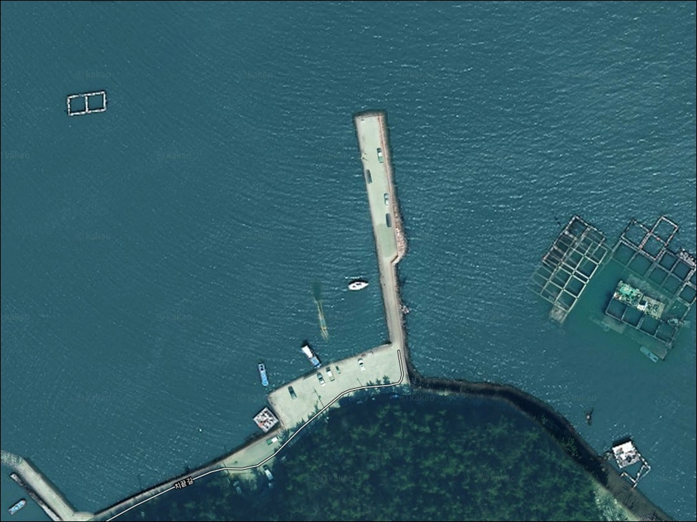
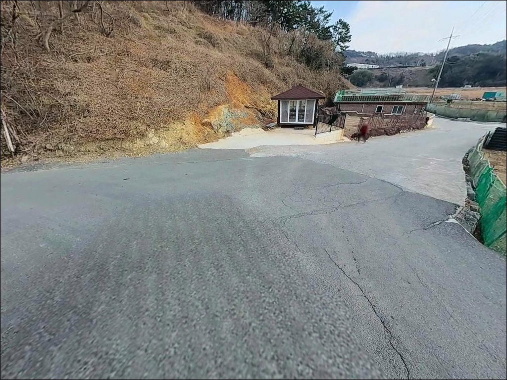
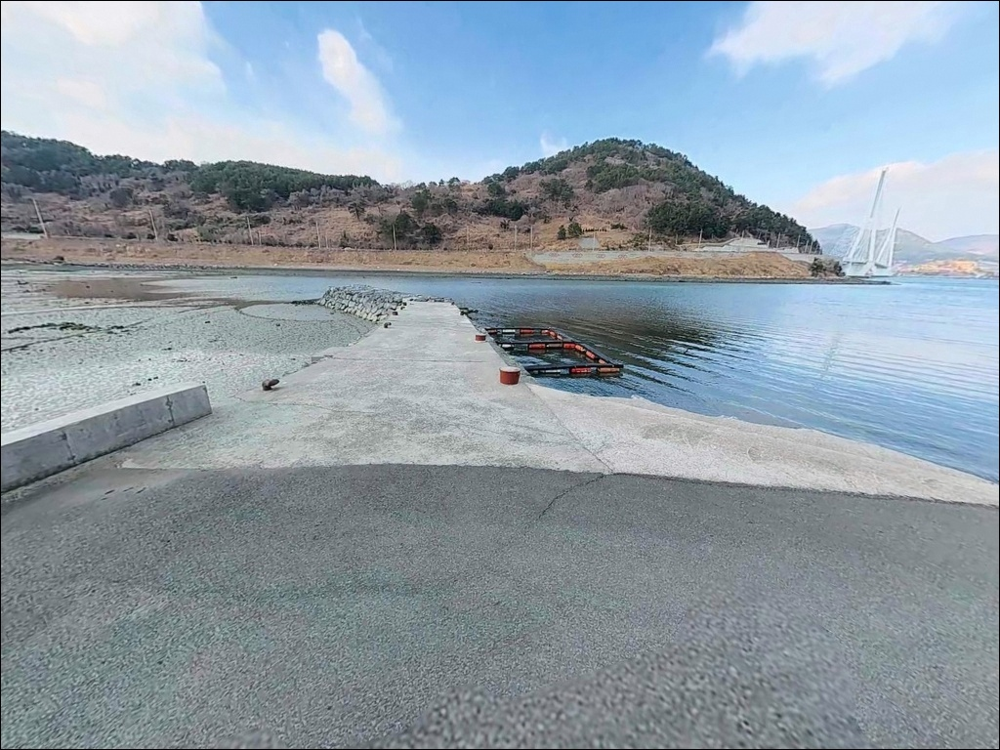
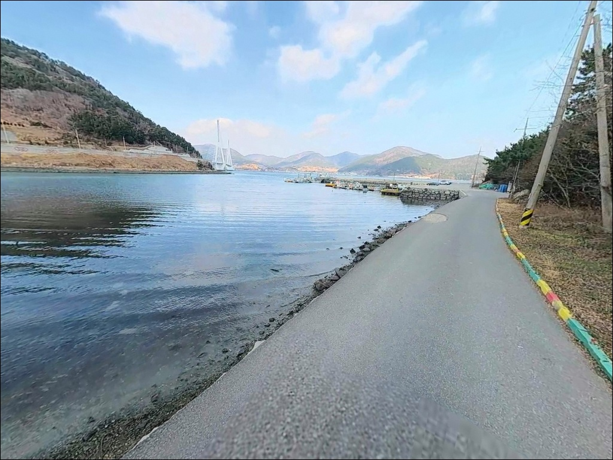
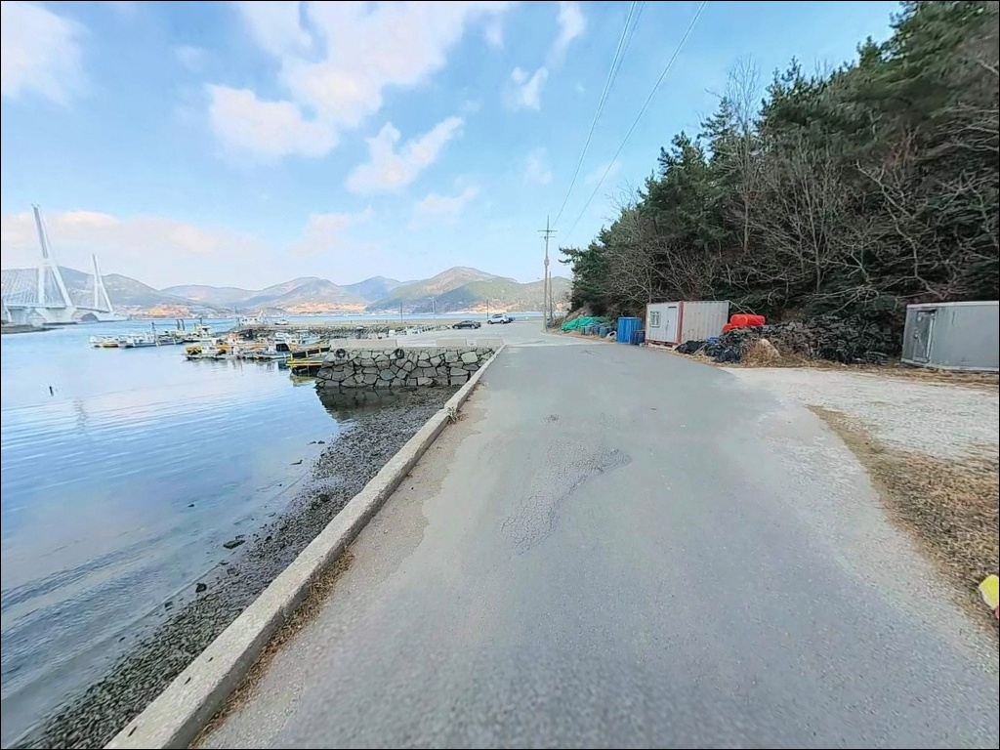
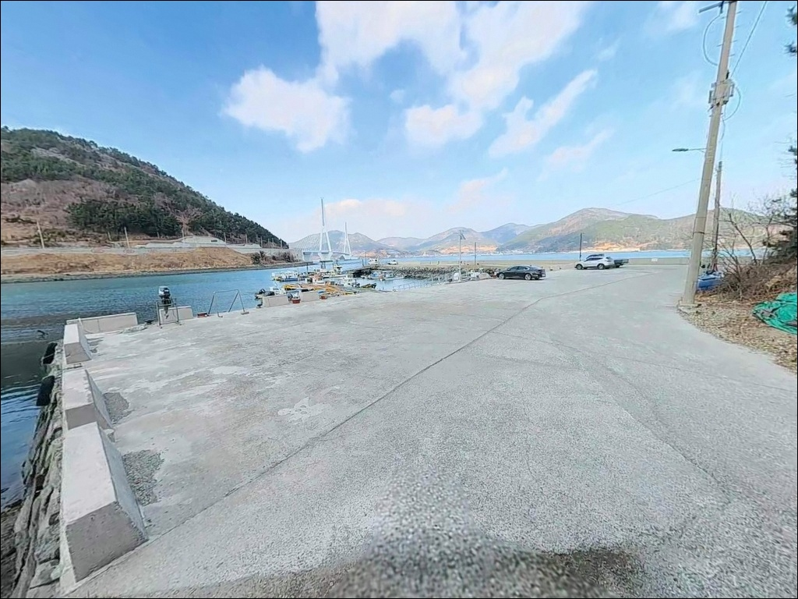
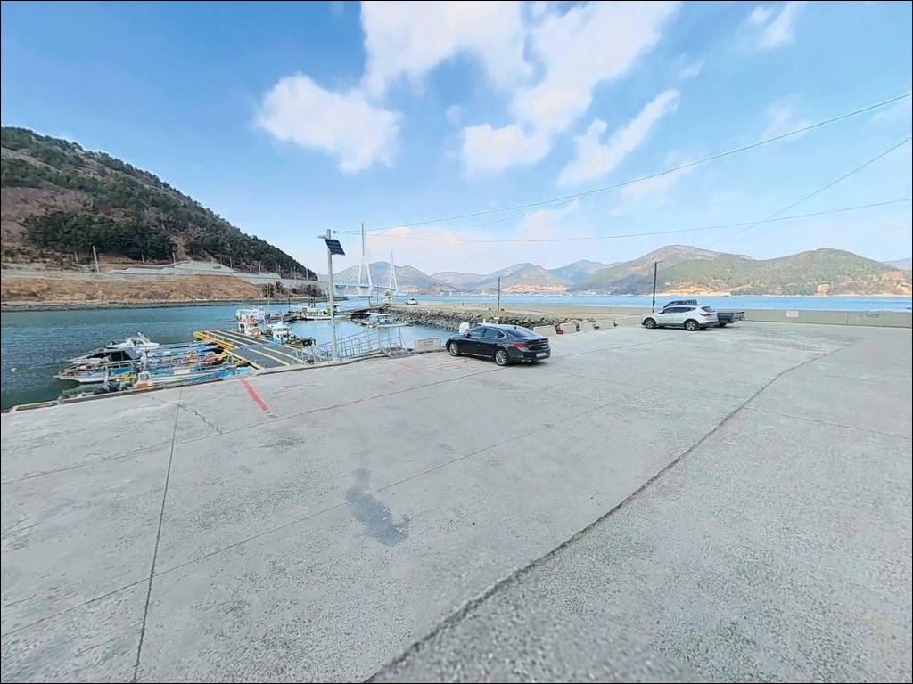
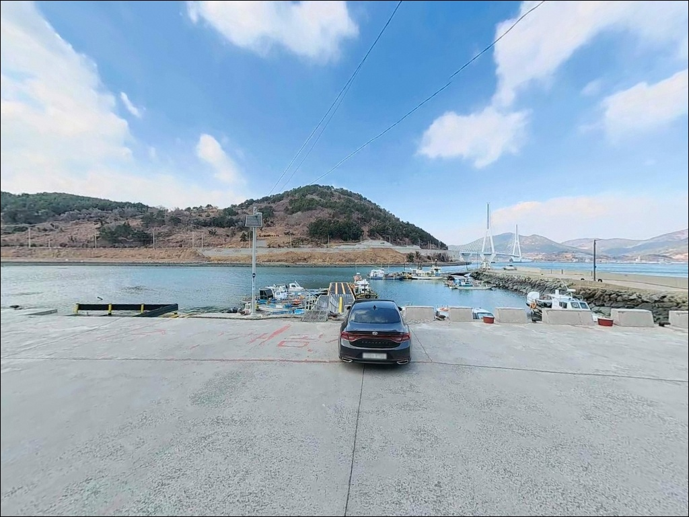
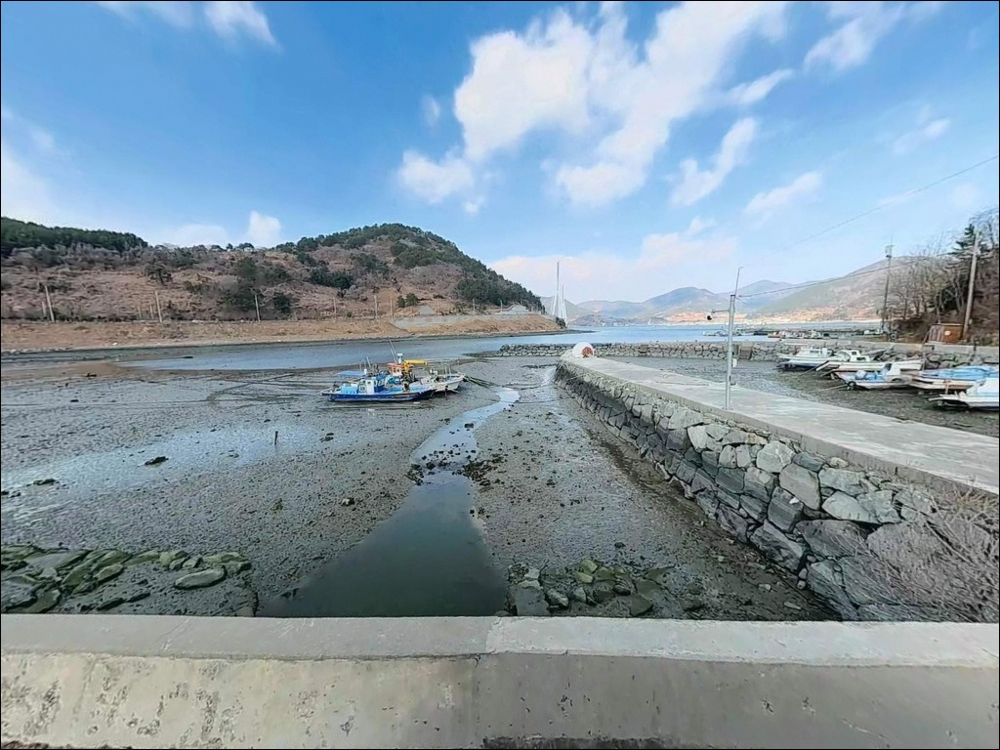

3노트 조류 밀릴 때, 여수 개머리방파제 감성돔 찌낚시 물때 타이밍


포인트 안내
개머리방파제
전남 여수시 남면 화태리 337-7
화태도와 월호도 사이 좁은 수로에서
창·낙조류가 각각 3.0노트에 달하는
이 방파제에서 조류를 무시하고 채비를 내리면
어떤 방식으로도 정상적인 운용이 어렵습니다.
초들물~중날물 구간을 기준으로 잡는 것이
이 포인트를 제대로 쓰는 출발점입니다.
화태대교 개통 이후 육지에서 차량으로 직접 진입할 수 있는
개머리방파제는 약 60m 길이의 일자형 방파제로,
외항에는 테트라포트가 촘촘하게 배치되어 있고
외해 방향으로 완전히 열린 구조입니다.
수심 깊고 조류 흐르는 외항 끝단은
감성돔 찌낚시와 에깅 모두에
지형 조건이 잘 맞습니다.
이 글은 개머리방파제의
진입 동선, 차박 체류 조건, 물때 판단 기준,
낚시 스타일별 운용 방법에 집중합니다.
조황 단정이나 특정 어종 보장은
이 글의 범위에 포함되지 않습니다.

1. 진입 동선과 차량 접근성
화태도는 2015년 화태대교 개통 이후
육지에서 차량으로 직접 들어올 수 있습니다.
돌산읍에서 화태대교를 건너
화태마을을 통과한 뒤,
섬 내부 도로를 따라 남서쪽으로 내려가면
개머리방파제 방향으로 접어드는 내리막 진입로가 나옵니다.
마을 안길 구간에는 폭이 좁은 구간이 있어
대형 SUV나 캠핑카는 진입 전
위성지도로 도로 폭을 먼저 확인하는 편이 안전합니다.
승용차와 소형 SUV는 무리 없이 통과하는
구조이며, 방파제 입구 공터에서
차량 회차가 가능한 공간이 확보되어 있습니다.
방파제와 선착장이 만나는 지점에
5~10대 규모의 주차 공간이 형성되어 있습니다.
낚시 자리와 주차 위치가 가까워
짐 이동 동선이 짧은 편이고,
방파제 바로 앞에서 낚시 준비를 시작할 수 있는 구조입니다.

2. 차박 환경과 야간 체류 여건
개머리방파제는 마을 외곽에 위치해
야간 차량 통행이 적고 소음이 거의 없습니다.
민가 밀집도가 낮아 프라이버시는 양호한 편이며,
방파제 조명이 일부 설치되어 있어
최소한의 시야 확보는 됩니다.
다만 테트라포트 구간에서는 개인 헤드랜턴이
필수입니다.
화태도와 월호도 사이 수로에서
바람 영향을 직접 받는 구조이므로,
기상에 따라 방파제 위 체류 환경이 달라집니다.
낚시를 마치고 방파제 앞 주차 공간에서
하룻밤 머무는 방식은 가능하지만,
사전에 당일 풍향·풍속 확인이 필요합니다.
개머리방파제 일대는 다도해해상국립공원 지정 구역에
포함될 가능성이 있는 위치입니다.
국립공원 구역 내 지정 장소 외에서는
야영·취사가 원칙적으로 허용되지 않으므로,
출발 전 여수시청 또는 국립공원공단에
사전 확인이 먼저입니다.


3. 주변 편의시설 및 인프라 현황
화태도 내 화태마을에 소형 매점이 있으나
운영 시간이 일정하지 않습니다.
식수, 얼음, 낚시 소품 등은
화태대교를 건너기 전
돌산읍에서 미리 갖추고 진입하는 편이
현실적인 준비 방식입니다.
반경 3km 이내에는 화태도 내
다른 마을 선착장들이 분포해 있습니다.
화태항 방면으로 이동하면
규모가 큰 방파제와 기본 시설을 이용할 수 있으며,
보급이 필요할 때
이 동선을 함께 활용하면 효율적입니다.
응급 상황 발생 시
화태대교를 건너 돌산읍까지 이동해야 합니다.
여수 시내까지는 차량으로 약 40분 거리이므로
비상약품과 구급용품을
사전에 충분히 준비하는 것이 기본입니다.

4. 조류가 강한 포인트에서 반드시 챙겨야 할 준비
개머리방파제 방문 전 가장 먼저 확인할 것은
물때와 조류 세기입니다.
화태도와 월호도 사이 수로는
창·낙조류가 각각 3.0노트 수준으로 흐르는 구간이며,
사리 전후 물때에는 채비 컨트롤 자체가
어려운 상황이 됩니다.
바다타임에서 화태리 기준 물때를 확인하고,
초들물~중날물 타이밍을 기준으로
출발 시각을 맞추는 것이 이 포인트의 기본 전략입니다.
외해 방향으로 열린 구조여서
기상 변화가 빠른 해역에 속합니다.
기상청 예보와 해양기상 예보를
당일 아침 다시 한번 확인하는 것이
헛걸음을 막는 조건입니다.
암반 지형 특성상 채비 손실이 잦으니
여분 채비를 넉넉하게 준비하는 편이 좋습니다.
조류가 강한 방파제에서 찌낚시를 할 때는
고부력 채비 운영이 기본입니다.
원투낚시라면 30호 이상의 봉돌을 준비해야
조류를 버티는 채비 운용이 가능합니다.
야간 낚시 시 테트라포트 구간 이동은 각별한 주의가 필요하며,
구명조끼와 헤드랜턴은 필수입니다.

5. 지형 기반 낚시 여건 분석
개머리방파제의 핵심 지형 조건은
두 가지가 겹친다는 점입니다.
화태도와 월호도 사이 좁은 수로가
강한 조류를 만들고,
암반·여밭이 발달한 바닥 구조가
다양한 어종의 서식 조건을 갖추고 있습니다.
방파제 끝단 외항 방향은 수심이 8~10m까지
빠르게 깊어지는 구조입니다.
외항 테트라포트 구간에서는
조류가 만드는 본류대를 활용하는 낚시가 이 포인트에 맞습니다.
내항 쪽은 상대적으로 수심이 얕고
조류 영향이 약하므로,
원투 채비를 내려 바닥 어종을 노리거나
조류가 강할 때 잠시 피하는 공간으로 활용하는 편입니다.
방파제 끝단과 선착장 주변에는
펄과 여밭이 섞인 경계 지점이 형성되어 있어
에깅 채비의 폴링 구간으로 활용하기 좋은 구조입니다.
이 일대 해역에서 기대해 볼 수 있는 어종은
감성돔, 볼락, 갑오징어, 노래미 등입니다.
출조 전 최신 조황은
화태도 낚시, 화태리 방파제 조황 키워드로
반드시 검색해 보시기 바랍니다.


6. 개머리방파제에 어울리는 낚시 스타일
이 포인트에서 지형 조건과 가장 잘 맞는 낚시는
릴찌낚시입니다.
외항 테트라포트 구간에서 본류대를 태우는 방식으로,
사계절 감성돔이 이 일대 해역에서 확인되는 패턴입니다.
조류가 흐르는 타이밍에 맞춰 입장하면
찌가 제대로 흘러가는 구간을 잡을 수 있습니다.
에깅도 이 포인트 구조에 잘 맞는 방식입니다.
가을철 갑오징어와 무늬오징어가 이 일대 남해 방파제에서
반응하는 시즌으로,
방파제 끝단과 여밭 경계 구간을
중심으로 탐색하는 방법이 유효합니다.
조류가 강할 때는 에기 무게를 올려
채비가 바닥에 닿는 속도를 확보해야 합니다.
볼락 라이트게임은 야간에 잘 맞습니다.
암반과 여밭이 발달한 방파제 주변 구조는
볼락 서식 조건을 갖추고 있으며,
특히 겨울철에 씨알이 붙는 경향이 있습니다.
소형 지그헤드 채비로 선착장 주변과
테트라포트 경계선을 천천히 탐색하는 방식이
이 포인트 지형에 어울리는 접근법입니다.
원투낚시는 내항 또는 외항 먼 구간을 공략하는 방식으로,
붕장어와 노래미를 노리기에 적합한 조건입니다.
다만 조류가 매우 빠른 포인트이므로
30호 이상의 봉돌을 사용해야
채비가 자리를 잡습니다.

7. 대안 포인트와 플랜 B 동선
개머리방파제 조류가 너무 강하거나
주차 공간이 여의치 않을 때는
화태항 방파제가 첫 번째 대안입니다.
개머리방파제에서 북동쪽으로 약 2km 거리이며,
규모가 크고 발판이 편해
낚시 여건 전반이 안정적입니다.
화태도 내 문여방파제도
대안으로 고려할 수 있습니다.
석축 발판 구조로 이동이 편하고
주차 공간이 넓어
개머리방파제를 처음 찾는 경우라면
문여방파제를 기점으로 잡고
탐색 동선을 구성하는 방법도 있습니다.
화태도를 벗어나 돌산읍 방향으로 이동하면
신기항, 임포항 등 접근성이 좋은
방파제 포인트들이 분포해 있습니다.
편의시설과 주차 여건이 더 나은 편이라
장거리 원정 출조라면
돌산읍 권역을 복수 목적지로
함께 계획하는 동선이 유효합니다.

조류를 아는 낚시인에게
개머리방파제는 좋은 선택지입니다
강한 조류를 활용한 찌낚시나
가을철 에깅을 즐기는 낚시인이라면
개머리방파제 지형 조건은
잘 맞는 구조입니다.
화태대교 개통으로 차량 진입이 자유롭고
방파제 바로 앞까지 접근 가능하다는 점은
섬 낚시의 장점과 접근성을 동시에 갖춘
이 포인트만의 강점입니다.
반면 조류를 무시하고 찾아가거나
물때 확인 없이 사리 전후에 입장하면
어떤 채비를 써도 운용이 되지 않는
상황을 맞닥뜨릴 수 있습니다.
물때 확인, 채비 여분, 진입로 사전 파악,
이 세 가지를 갖추고 간다면
화태도 남서쪽 끝단에서
기억에 남는 출조를 만들 수 있는 곳입니다.
방파제 앞 주차 공간을 이용해
하룻밤 머무는 차박 출조라면
다도해해상국립공원 구역 포함 여부를
먼저 확인한 뒤 계획을 세우는 것이
낚시와 차박 모두를 온전히 즐기는
준비 방식입니다.